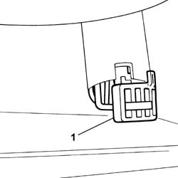
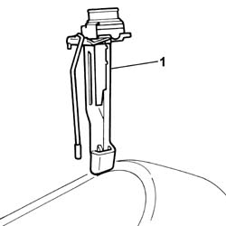

7045B06 GUIDE BUSH FOR (ONE), FRONT SEAT HEAD RESTRAINT LEFT OR RIGHT - R.R.
- Path
- Procedures > 70 FITTINGS > 7045 FRONT SEATS > 7045B FRONT SEAT HEAD RESTRAINT/ARM REST > 7045B06 GUIDE BUSH FOR (ONE), FRONT SEAT HEAD RESTRAINT LEFT OR RIGHT - R.R.
- Kind
- repair procedure (removal / refitting; the operation number is the code)
- Applies to
- all engines; all production periods
- Interactive page
- https://sloeber94.github.io/elrnDB-fUlss/en/#/179007855
Applies to: all engines; all production periods
 Removing
Removing
 Refitting
RefittingOp. 7045B10 L/H OR R/H FRONT SEAT HEAD RESTRAINT - R+R
Op. 7045D82 REAR TRIM FOR RIGHT FRONT SEAT CABLE LOOM - R.& R.
- Remove the backrest cover traction elastic.
1. Press the special clip to release the head restraint guide bush from its housing.

Applies to: all engines; all production periods
1. Remove the head restraint guide bush.

Applies to: all engines; all production periods
Refitting
Removing- Attach the head restraint guide bush to the seat cover.
- Fit the head restraint guide bush in place.
- Fit the backrest cover traction elastic.
Op. 7045D82 REAR TRIM FOR RIGHT FRONT SEAT CABLE LOOM - R.& R.